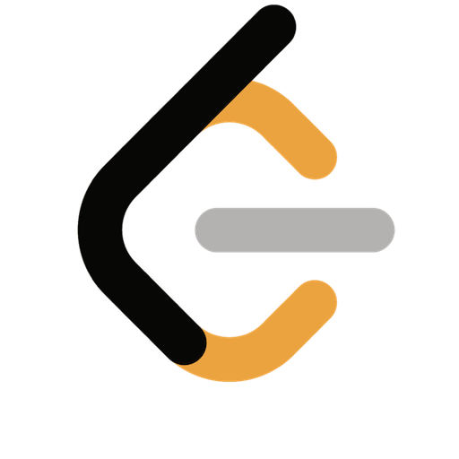
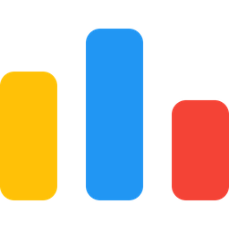

Algoritmos Greedy y Backtracking
¿Qué son estas técnicas?
Greedy (Voraz) y Backtracking (Vuelta Atrás) son dos enfoques algorítmicos fundamentales para resolver problemas de optimización y búsqueda. Aunque ambos exploran un gran número de posibilidades, lo hacen de maneras muy diferentes.
- Un algoritmo Greedy toma decisiones localmente óptimas en cada paso con la esperanza de encontrar una solución globalmente óptima. Es rápido pero no siempre funciona.
- Un algoritmo de Backtracking construye soluciones candidatas de forma incremental y abandona una opción tan pronto como determina que no puede conducir a una solución válida (poda). Es más exhaustivo y, por lo general, más lento.
💰 Algoritmos Greedy (Voraces)
La idea principal es simple: en cada paso, elige la opción que parece la mejor en ese momento sin pensar en las consecuencias futuras. Esta estrategia funciona solo si el problema posee dos propiedades clave:
- Propiedad de elección voraz: Una elección localmente óptima conduce a una solución globalmente óptima.
- Subestructura óptima: Una solución óptima al problema contiene soluciones óptimas a sus subproblemas.
Estructura General en C++:
// Estructura general de un algoritmo Greedy
TipoSolucion algoritmoGreedy(vector& candidatos) {
TipoSolucion solucion; // Inicializa la solución
// Ordenar los candidatos si es necesario. Este es un paso muy común.
sort(candidatos.begin(), candidatos.end(), criterioDeOrdenacion);
while (!candidatos.empty() && !esSolucionCompleta(solucion)) {
// 1. Seleccionar el mejor candidato actual
TipoDato mejorCandidato = seleccionarMejor(candidatos);
// 2. Verificar si es una elección factible
if (esFactible(solucion, mejorCandidato)) {
// 3. Añadir a la solución
agregarASolucion(solucion, mejorCandidato);
}
// Remover el candidato de la lista de pendientes
removerCandidato(candidatos, mejorCandidato);
}
return solucion;
}
Ejemplo Clásico: Problema de Selección de Actividades
Dado un conjunto de actividades con un tiempo de inicio y fin, selecciona el máximo número de actividades que no se solapen. La estrategia Greedy es: ordenar las actividades por su tiempo de finalización y escoger siempre la siguiente actividad compatible que termine antes.
Implementación en C++ (Selección de Actividades):
#include <iostream>
#include <vector>
#include <algorithm>
struct Actividad {
int inicio, fin;
};
bool compararActividades(const Actividad& a, const Actividad& b) {
return a.fin < b.fin;
}
void seleccionarActividades(std::vector& acts) {
// 1. Ordenar por tiempo de finalización
std::sort(acts.begin(), acts.end(), compararActividades);
std::cout << "Actividades seleccionadas: " << std::endl;
// 2. La primera actividad siempre se selecciona
int i = 0;
std::cout << "(" << acts[i].inicio << ", " << acts[i].fin << ")" << std::endl;
// 3. Iterar y elegir la siguiente actividad compatible
for (int j = 1; j < acts.size(); j++) {
if (acts[j].inicio >= acts[i].fin) {
std::cout << "(" << acts[j].inicio << ", " << acts[j].fin << ")" << std::endl;
i = j;
}
}
}
🚨 ¿Cuándo falla un algoritmo Greedy?
Greedy es poderoso pero no infalible. Un ejemplo clásico es el Problema del Cambio de Monedas. Si tienes monedas de {1, 5, 10} para dar 15 de cambio, el enfoque Greedy (tomar siempre la moneda más grande) funciona (10 + 5). Pero si las monedas son {1, 7, 10} y quieres dar 14, Greedy elegiría 10 + 1 + 1 + 1 + 1. La solución óptima es 7 + 7.
↩ Algoritmos de Backtracking
Backtracking explora sistemáticamente todas las posibles soluciones a un problema. Se puede visualizar como un recorrido en profundidad (DFS) de un árbol de espacio de estados. La clave es la poda: si una ruta parcial no puede llevar a una solución, se abandona (se "vuelve atrás") y se prueba otra.
- Se usa para problemas de decisión, optimización y enumeración.
- Garantiza encontrar una solución si existe, pero puede ser lento.
- La clave es definir el estado, las decisiones y las restricciones.
Estructura General en C++ (Recursiva):
void backtrack(Estado& estado, vector& decisiones, Solucion& resultado) {
// Condición base: si el estado actual es una solución válida
if (esSolucion(estado)) {
procesarSolucion(resultado, estado);
return; // A veces se detiene aquí, a veces sigue buscando más soluciones
}
// Iterar sobre todas las posibles decisiones desde el estado actual
for (Decision decision : generarDecisiones(estado)) {
// 1. Aplicar la decisión
aplicar(estado, decision);
// 2. Poda: verificar si la nueva ruta es prometedora
if (esValido(estado)) {
// 3. Llamada recursiva
backtrack(estado, decisiones, resultado);
}
// 4. Deshacer la decisión (el "backtrack")
deshacer(estado, decision);
}
}
Ejemplo Clásico: Problema de las N-Reinas
El objetivo es colocar N reinas en un tablero de N×N de manera que ninguna reina amenace a otra. Backtracking explora colocando una reina por fila, y si una colocación lleva a un conflicto, "vuelve atrás" y prueba la siguiente columna en la fila anterior.
Implementación en C++ (N-Reinas):
#include <iostream>
#include <vector>
bool esSeguro(int fila, int col, int n, const std::vector& tablero) {
// Comprobar columna hacia arriba
for (int i = 0; i < fila; ++i) {
if (tablero[i][col] == 'Q') return false;
}
// Comprobar diagonal superior izquierda
for (int i = fila, j = col; i >= 0 && j >= 0; --i, --j) {
if (tablero[i][j] == 'Q') return false;
}
// Comprobar diagonal superior derecha
for (int i = fila, j = col; i >= 0 && j < n; --i, ++j) {
if (tablero[i][j] == 'Q') return false;
}
return true;
}
void resolverNReinas(int fila, int n, std::vector& tablero, std::vector>& soluciones) {
if (fila == n) {
soluciones.push_back(tablero);
return;
}
for (int col = 0; col < n; ++col) {
if (esSeguro(fila, col, n, tablero)) {
tablero[fila][col] = 'Q'; // Tomar decisión
resolverNReinas(fila + 1, n, tablero, soluciones); // Recursión
tablero[fila][col] = '.'; // Backtrack
}
}
}
Comparación: Greedy vs. Backtracking
- Decisión: Greedy toma una decisión y nunca la reconsidera. Backtracking prueba todas las opciones y las deshace si no funcionan.
- Optimalidad: Greedy no siempre garantiza la solución óptima; Backtracking puede encontrar todas las soluciones óptimas (si se le deja explorar todo el espacio).
- Velocidad: Greedy es mucho más rápido, a menudo con complejidades como $O(N \log N)$ (por el ordenamiento) o $O(N)$. Backtracking puede tener complejidades exponenciales, como $O(2^N)$ o $O(N!)$, en el peor de los casos.
Ejercicios:

Greedy: 435. Non-overlapping Intervals
Greedy: 158A - Next Round